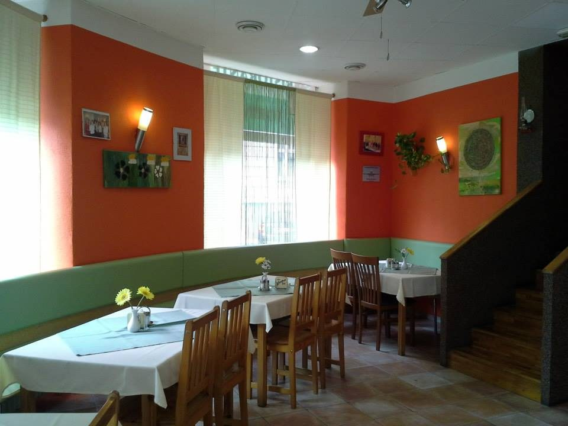
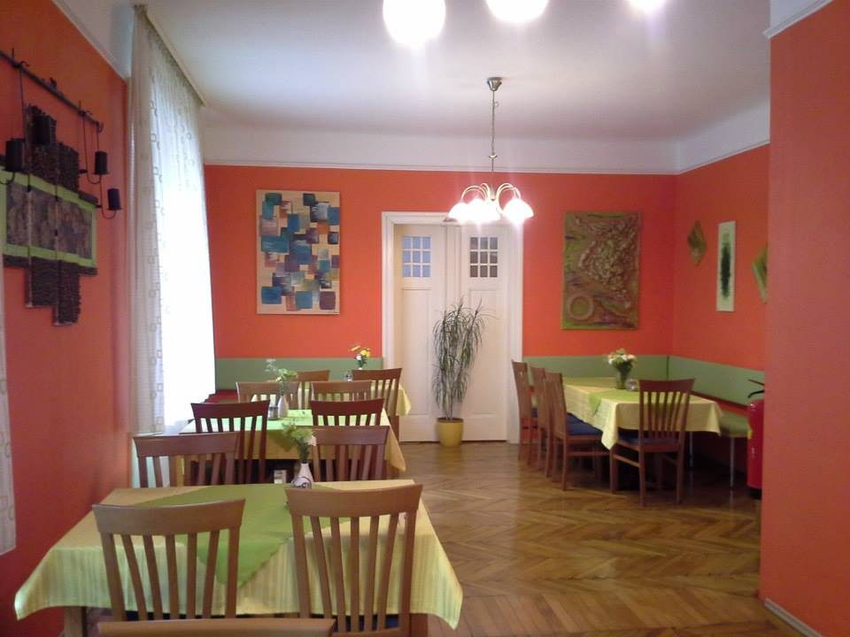
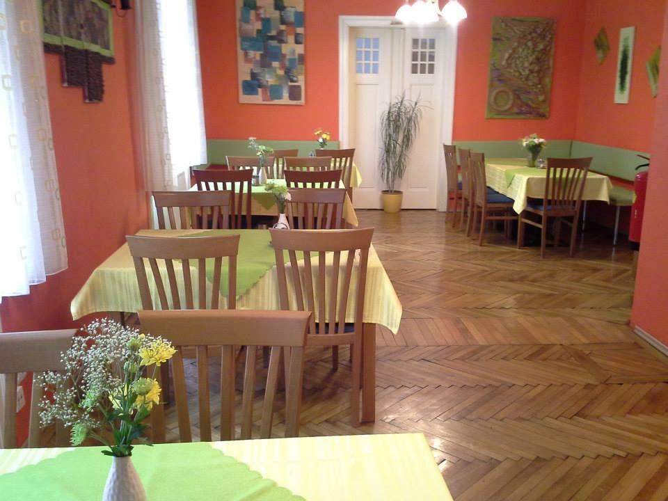
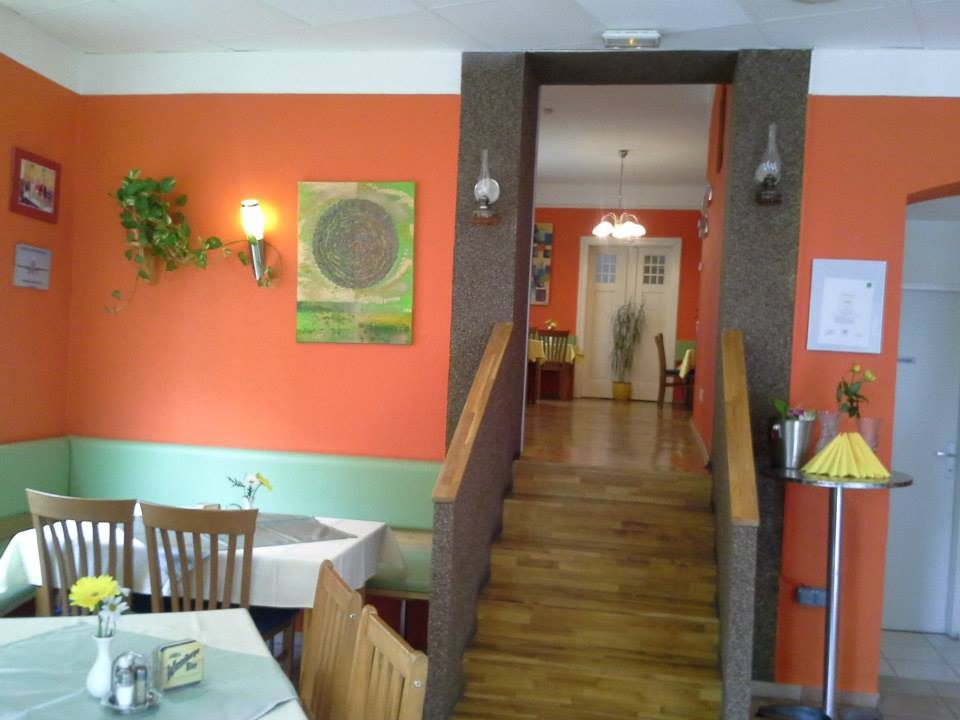

Bildergalerie
Ein Blick ins Lokal
Terrakottafarbene Wände, grüne Sitzbänke, Fischgrätparkett: das Torino in der Neunkirchner Straße.




Das Lokal
Wirtshaus mit italienischer Karte
Das Torino liegt in der Neunkirchner Straße 52, unweit des Stadtzentrums von Wiener Neustadt. Zwei Gasträume, eine offene Karte: Pizza und Pasta stehen neben Schnitzel, Grillteller und Fisch.
Was im Lokal serviert wird, kommt auch ins Haus: Der Lieferservice fährt Dienstag bis Sonntag von 11:00 bis 21:30 Uhr.
Gut zu wissen
Kurz gefasst
- AdresseNeunkirchner Straße 52, 2700 Wiener Neustadt
- Telefon02622 82 916
- GeöffnetDienstag bis Sonntag 11:00–21:30 Uhr, Montag Ruhetag
- Lieferservicegratis ab € 15,– Bestellwert, darunter € 2,–
- Bewertung4,4 von 5 bei 381 Google-Bewertungen